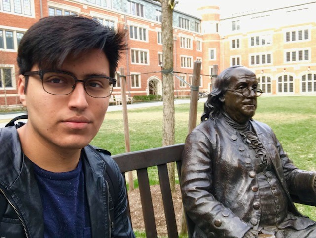

About Me
I'm a third year student studying Computer Engineering at Dartmouth College. I am interested in robotics, full stack development, video game design, humanitarian work, and other engineering in tech topics. On campus, I am part of the Dartmouth Humanitarian Engineering Club (DHE), the Society for Hispanic Professional Engineers, and the First-Year Student Enrichment Program. At the moment, I am currently undecided whether I want to pursue an academic career in a graduate school or work in industry. Currently, I am looking for internship and research opportunities for Winter 2019/2020, Spring 2020, and Summer 2020.
My personal interests include mechanical keyboards (see r/MechanicalKeyboards on Reddit), typing, computer hardware, humanitarian work, and video games. A bit about each: I can currently type 90+ words per minute and am working to improve that to 100+ WPM. My interest for typing fast stemmed from my interest in mechanical keyboards. I also have built my own personal computer for the purpose of school work, any professional work, and other personal uses. I decided to build my own PC because in order to use some computer apps for classes, I had to make a long walk to the local engineering school (their computers also ran rather slow in comparison); I decided that it would make me more productive, and it did! My interest for humanitarian work started before Dartmouth, but I was relieved to find DHE here because it sllowed me to pursue a passion of mine while also applying topics learned from class to a real life project. I am currently working on The Cot Project, where we are building better cots for a local homeless shelter. I've been playing video games since I can remember - it started when my parents gave me an NES system when I was five. In high school, I was able to get good enough at some games to win money from tournaments, but I since left the competitive scene to focus on my academic career. Now, video games are a casual thing, where I can relax and take some time off from school.